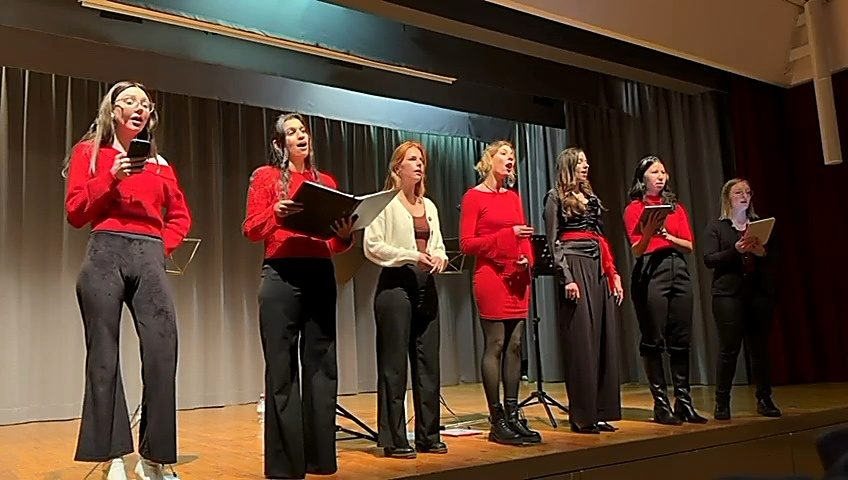
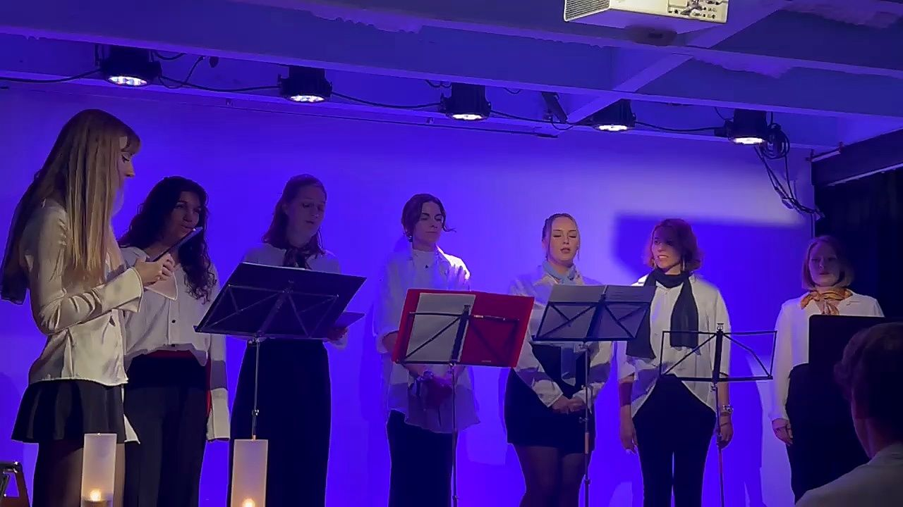
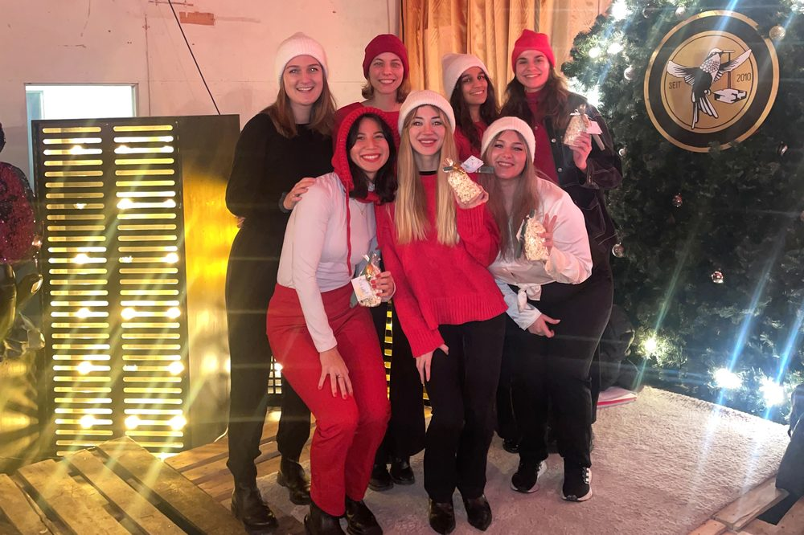
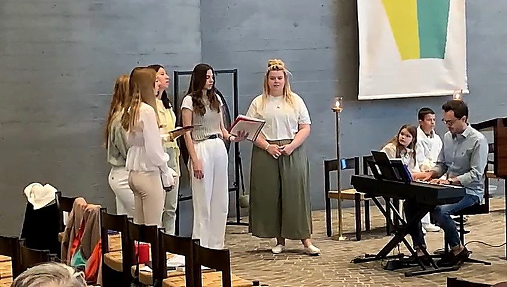
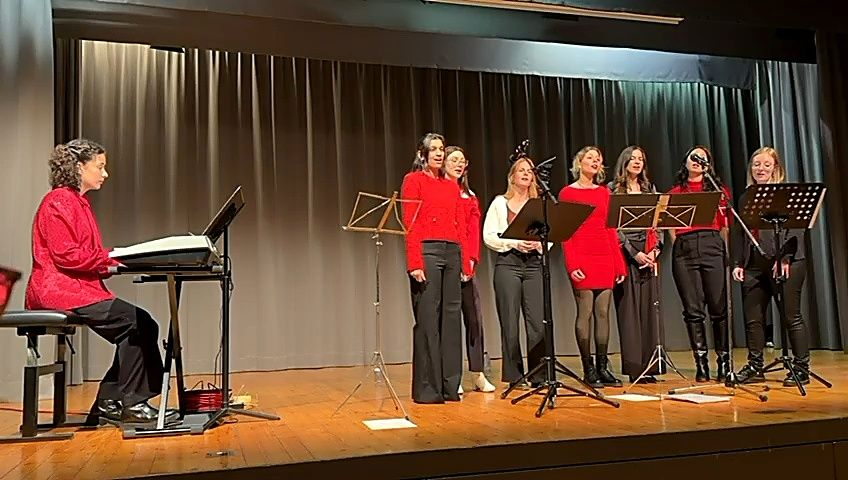
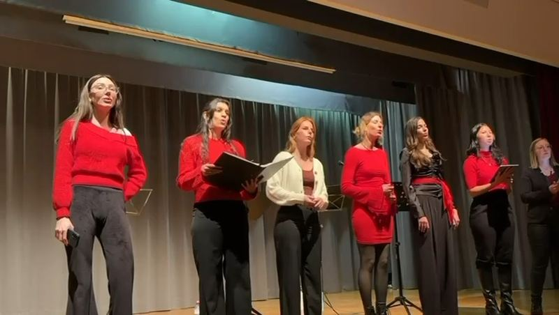
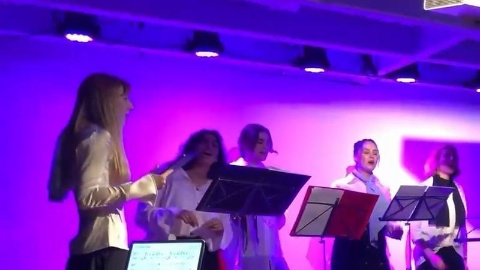
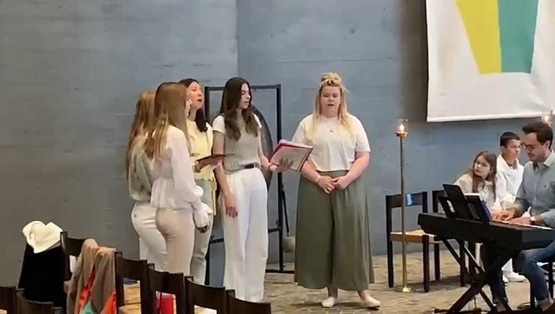
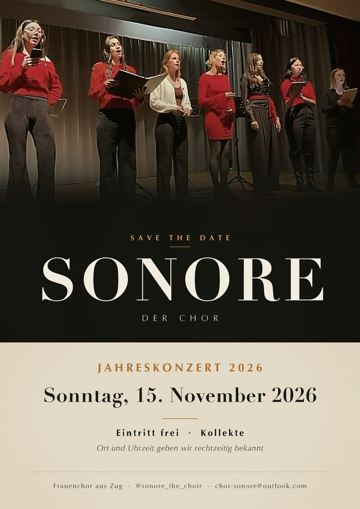

Frauenchor aus Zug
Harmonie erleben – von Pop über Gospel bis Klassik, in vielen Sprachen und mit ganz viel Freude.
Wer wir sind
Viele von uns sangen schon als Kinder und Jugendliche gemeinsam. 2024 haben wir uns als eigenständiger Chor neu formiert – und seit 2025 sind wir ein Verein mit festen Strukturen. Geblieben ist, was uns ausmacht: die Freude am gemeinsamen Musizieren.
Unser Repertoire ist bunt, mehrsprachig und so facettenreich wie unsere Stimmen selbst. Dabei schöpfen wir nicht nur aus bekannten Chorliedern, sondern auch aus dem musikalischen Wissen und Können unserer Mitglieder: Viele von uns spielen Instrumente, komponieren, produzieren oder studieren Musik.
Bei uns zählt nicht nur das Singen, sondern auch die Freundschaft und der Zusammenhalt im Chor.

Unsere Auftritte
Der Anfang: Nach Monaten gemeinsamer Proben standen wir zum ersten Mal als Chor auf der Bühne – in weissen Blusen, bei Kerzenlicht und Klavierbegleitung. Aus diesem Abend ist alles Weitere gewachsen.

Unser erster Auftritt ausserhalb von Zug – und der Beweis, dass unser Repertoire auch ausserhalb des Konzertsaals trägt.

Seither gestalten wir regelmässig Gottesdienste musikalisch mit und erreichen ein Publikum weit über das klassische Konzertpublikum hinaus.

Zwölf Stücke, ein Solo, eine Zugabe – vor rund 70 Gästen, bei freiem Eintritt und mit Apéro. Unser bisher schönster Abend.

Mit Luegid vo Bärge ond Tal, Guantanamera, Only You und dem rätoromanischen La sera sper il lag.
Unser musikalischer Höhepunkt des Jahres – der Ort wird noch bekannt gegeben.
Hören und sehen



Ton einschalten nicht vergessen – wir singen ja.
Repertoire
Von Coldplay bis Rutter, von Mundart bis Rätoromanisch, in vielen Sprachen – wir suchen unsere Stücke danach aus, was uns berührt und was zu unseren Stimmen passt.
Save the date
Sonntag, 15. November 2026
Unser musikalischer Höhepunkt: ein Abend mit einem Querschnitt durch unser Repertoire – Pop-Arrangements, Gospel, Schweizer Volkslieder und sakrale Werke. Der Eintritt ist wie immer frei, damit das Konzert allen offensteht; wir freuen uns über eine Kollekte.
Ort in der Stadt Zug – wird hier bekannt gegeben. Für Neuigkeiten folgt uns auf Instagram oder schreibt uns eine Mail.

Mitsingen
Wir freuen uns immer über neue Stimmen. Vorsingen musst du nicht – komm einfach einmal in eine Probe und schau, ob es passt. Die erste Probe ist kostenlos.
Alle zwei Wochen am Montagabend, 18:45 bis 21:15 Uhr, im Pfarreizentrum St. Johannes in Zug. Im Sommer und Winter machen wir Pause.
Jede Probe beginnt mit Einsingen, Atemtechnik und Stimmbildung unter professioneller Leitung. Danach arbeiten wir an unseren Stücken für das nächste Projekt.
Der Mitgliederbeitrag liegt bei CHF 10 bis 50 im Jahr. Dazu kommt pro Projekt ein Kostenbeitrag von rund CHF 100 bis 300 – damit finanzieren wir Raum und Chorleitung.